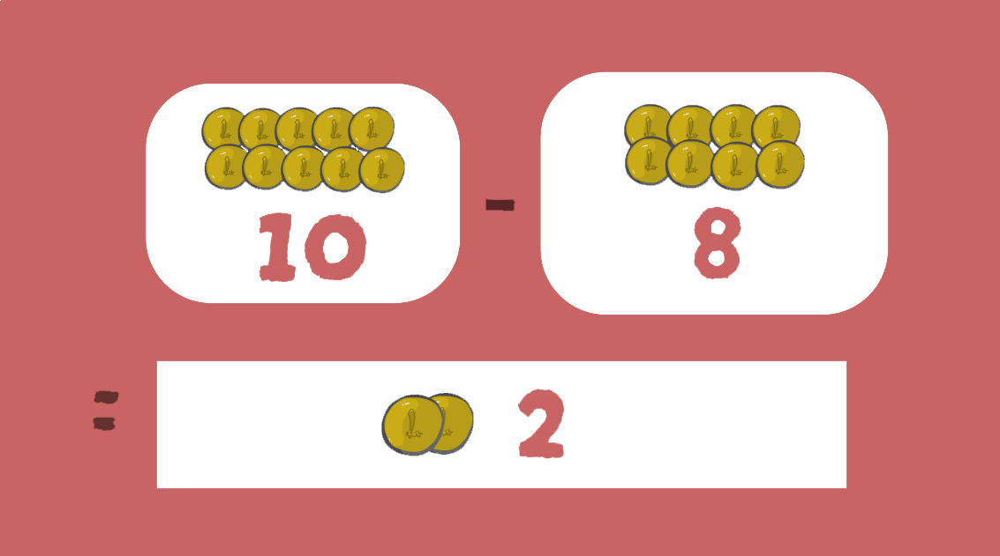
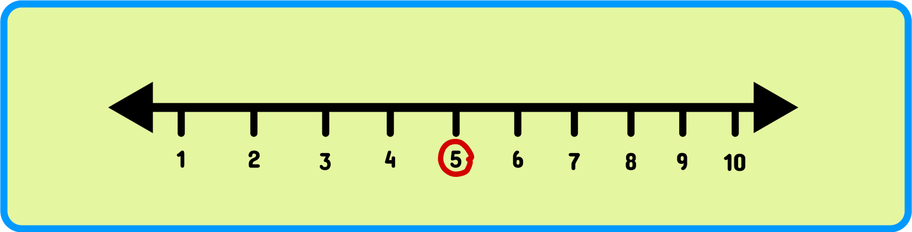
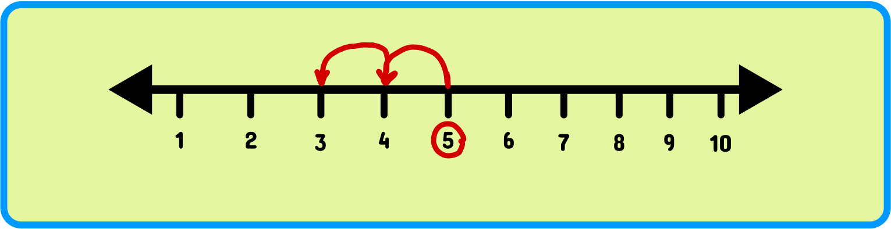

Substracting 1 Digit
We can observe the applications of subtraction in our day-to-day life in different situations.
Suppose we purchase ice cream for a certain amount of money, say £8 and we give £10 to the cashier. Now, the cashier returns the excess amount by performing subtraction such as 10−8=2. Then, the cashier will return £2.

The answer to this question is subtraction.
Stratigies to use in Substracting
1 - Visual representation
2 - Subtraction on Number Lines

Since we need to subtract 2, we take 2 steps back.

Finally we observe that we are standing at 3 So, this is how 5 − 2 is calculated on the number line.
3 - Subtracting 1 from a number
3 – 1 = 2
1 – 1 = 0
3 ice creams – 1 ice cream = 2 ice creams
-
=
4 - Subtracting 0 from a number
9 – 0 = 9
5 – 0 = 5
2 Birds - 0 Birds = 2 Birds
-
=
5 - Subtracting a number from it self
7 – 7 = 0
4 Cars – 4 Cars = 0 cars
-
=